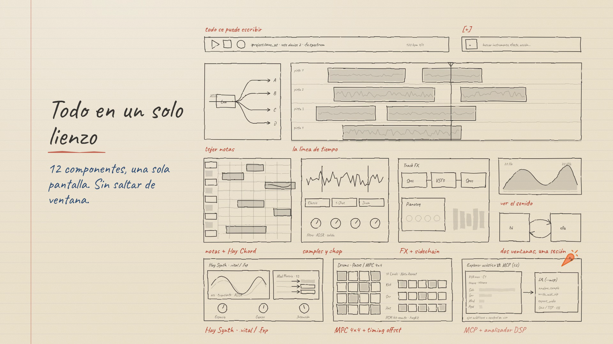
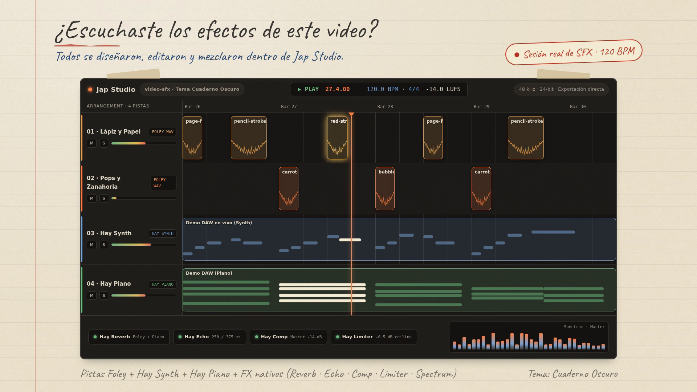
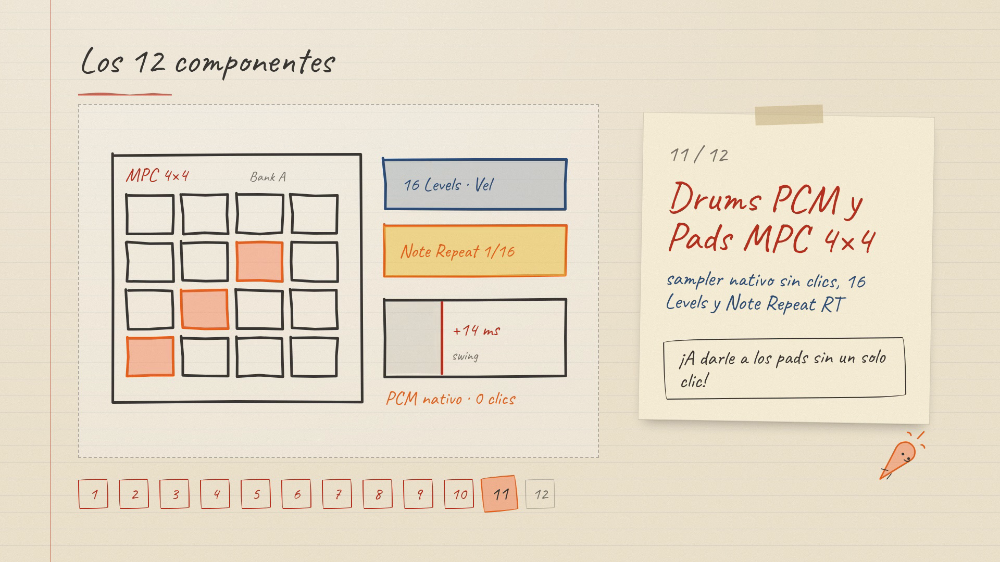

Guía oficial de producción musical
Guía completa para instalar, configurar, componer, diseñar sonidos con MPE polifónico, producir baterías en Pads MPC 4×4, mezclar con FX nativos y VST3, colaborar por P2P y conectar agentes de IA mediante MCP.

:p. 10Jap Studio es una estación de trabajo de audio digital (DAW) nativa escrita en Rust + GPUI. Su principio rector es trabajar en un solo lienzo: Arrangement, Piano Roll, Hay Synth, Sampler, Drums/MPC, Track FX y Explorer viven acoplados en la misma ventana y comparten un único transporte con motor de audio sin bloqueos.
Descarga jap-studio-x86_64.flatpak desde jap.sevenpitch.dev. Incluye el motor release, libsfizz, PipeWire/ALSA, P2P, MCP y bancos SoundFont listos:
flatpak install --user jap-studio-x86_64.flatpak
flatpak run dev.sevenpitch.japTambién lee plugins instalados en ~/.vst3 y ~/.clap (nativos o vía yabridge) y tus carpetas ~/Music y ~/Documents.
Descarga JapStudio-Windows-x64.zip desde jap.sevenpitch.dev, descomprime en una carpeta y ejecuta:
jap-studio.exeIncluye audio nativo WASAPI, exportación WAV con medición EBU R128, colaboración P2P y servidor MCP por TCP local (sin instalador ni dependencias externas).
La primera vez que abres Jap Studio aparece un asistente rápido donde puedes dejar el entorno a tu medida en menos de diez segundos (todo se puede cambiar después en Configuración con Ctrl+,):
Español, English, Português, Français y 日本語. Cambio en vivo sin reiniciar, o con :lang es|en|pt|fr|ja.
Elige Jap Studio, Ableton Live o FL Studio según tu memoria muscular. Cambia al instante con :keymap jap|ableton|fl.
4 temas curados: Cyberpunk Studio, Daylight Studio, Cuaderno Claro y Cuaderno Oscuro, más tamaño global (10–20 px).
:list device y :use device N) para elegir tu salida y entrada PipeWire, ALSA o WASAPI y frecuencia de muestreo.:midi-scan o el botón de escaneo en Configuración → MIDI.Compacto / Normal / Grande / Extra + A− / A+), Idioma y Legibilidad e interacción (contraste de selección y efectos de cursor)..loro (CRDT) con pistas, clips, curvas MPE, Drums,
cadena FX, automatización, LFOs y wavetables custom. Usa Ctrl+S para guardar y
Ctrl+Shift+S para guardar como copia.
En lugar de abrir ventanas flotantes que tapan tu mezcla, Jap Studio organiza todo alrededor de una barra superior de transporte, pestañas de vista principal y paneles acoplables que puedes maximizar en un toque con F11 (y restaurar con Esc o F11).
| Control | Atajo / Comando | Qué hace |
|---|---|---|
| Play / Stop | Espacio · Mayús+Espacio | Inicia desde el cursor de edición y detiene dejando decaer colas de reverb/notas. Mayús+Espacio retoma justo donde paraste. |
| Grabar MIDI / Audio | R · Alt+R · :rec.audio | Graba MIDI sobre la pista armada o audio desde tu micrófono/interfaz (alterna Mono/Estéreo con :rec.stereo y pre-cuenta con :countin). |
| Monitoreo (Mon) | Alt+I · :mon | Escucha tu entrada en vivo a través de toda la cadena FX de la pista (Off | IN | AUTO) mostrando la latencia real total en ms (buffer + ring + PDC). |
| +MIDI (Recuperar) | :capture · Clic derecho | Captura retroactivamente las notas que improvisaste sin pulsar Rec y las inserta como clip. Clic derecho limpia el búfer MIDI al instante. |
| BPM y Tap Tempo | Alt+T · :tap · :tempo | Cambia el BPM en tiempo real sin detener Play. Pulsa TAP al ritmo o escribe :tempo 128. |
| Loop y Metrónomo | Ctrl+L · Ctrl+K | Activa el bucle global (:transport.loop inicio fin) y el metrónomo con volumen ajustable (:metro.vol 80). |
| M-FX y LUFS | :mfx · :master.fx | Abre la cadena de efectos del Bus Master con medidor de sonoridad momentánea LUFS integrado. |
[+] y la línea de comandos :En Jap Studio toda operación es una acción unificada. Puedes usar el ratón, los atajos o escribir:
[+] (Ctrl+Shift+P o Insert): filtra instrumentos (categoría Hey: Hay Synth, Hay Piano, Hay Sampler, Drums/MPC y VST3), efectos nativos, herramientas Lua y comandos.: (Ctrl+P o tecla :): ejecuta acciones con autocompletado inmediato, por ejemplo :sy (nuevo Hay Synth), :sa (nuevo Hay Sampler), :return (bus FX), :lfo.add pan 1/4 0.6 sine o :export -lufs -14.:kbd) para tocar notas desde tu teclado de ordenador cuando no tengas un controlador físico conectado.El Arrangement reúne pistas de audio, pistas MIDI/instrumento, grupos (Hilos) y buses Send / Return en una mezcla multipista real con compensación automática de latencia (PDC). Arrastra cualquier archivo WAV, FLAC, OGG, MP3 o MIDI desde tu sistema o desde el Explorer directamente al lienzo.

Cada clip de audio incluye estiramiento temporal no destructivo en su panel Warp / Tono, compartido entre Play, preescucha y Exportación:
Off (sin estiramiento), Re-Pitch (cambia tono y velocidad juntos como vinilo), Beats (conserva transientes rítmicos) y Complex (polifónico para acordes, voces y mezclas).=DAW, :2, 1× y ×2. Si cambias el BPM del proyecto, los clips con Warp se adaptan automáticamente.:audio.to_midi (o desde el menú contextual del clip) para transcribir melodías y acordes a un clip MIDI editable usando Basic Pitch offline.:freeze): renderiza la pista (pre-fader / post-FX) a WAV 32-bit float en segundo plano. Libera la CPU de sintetizadores pesados y VST3 manteniendo vivos volumen, pan, mute, solo, automatización y envíos Return. La insignia ❄ permite descongelar al instante (:unfreeze).:return), coloca en él una reverb o delay al 100% Wet y sube el envío post-fader (0–100%) desde cada pista o desde el Mixer (F3). Los buses Return son Solo Safe.
Haz clic en cualquier clip MIDI del Arrangement (o pulsa F4) para abrir el
Piano Roll acoplado debajo de la línea de tiempo. Incluye encuadre automático inteligente al abrir,
cuantización, escalas, afinación por clip (±24 semitonos y ±100 cents),
MPE polifónico completo y el generador interactivo Hay Chord.
MPE (MIDI Polyphonic Expression) permite que cada nota individual dentro de un mismo acorde tenga su propia curva de tono, timbre y presión independientes, en lugar de afectar a todo el acorde a la vez. Funciona de forma nativa en Hay Synth y se reenvía por canal independiente a plugins VST3 compatibles.
〜 MPE en la barra del Piano Roll (o abre la pestaña MPE del inspector lateral).±48 st): curva de tono por nota con rampa precisa muestra a muestra.En la pestaña MPE del Piano Roll tienes generadores instantáneos para dar vida humana a leads, bajos 808 y cuerdas:
| Botón | Movimiento musical | Cuándo usarlo |
|---|---|---|
↗ +2 st / ↘ −2 st | Deslizamiento de 1 tono arriba o abajo | Bends suaves tipo guitarra, voz o sinte expresivo. |
↗ +12 st / ↘ −12 st | Barrido de 1 octava completa | Slides de 808, subidas de energía o caídas de bajo. |
⤴ Scoop | Empieza un poco grave y sube a la nota real | Ataque expresivo tipo saxofón, trompeta o voz R&B. |
⤵ Fall | Sostiene la nota y cae al final | Remate natural de metales, leads o notas largas antes de un silencio. |
〜 Vib ±30c / ±75c | Vibrato sutil o marcado alrededor de la nota | Dar calor orgánico a cuerdas, pads y leads (cents = centésimas de semitono). |
⇝ Legato Slide | Conecta el final de una nota con la altura de la siguiente | Líneas de bajo 808 o leads deslizantes sin cortes bruscos entre notas. |
Quantize st / Invert / Reset | Ajusta puntos a semitonos exactos, invierte o limpia | Corregir bends afinados, crear espejos melódicos o volver a tono recto. |
La pestaña Acordes (Hay Chord) dentro del Piano Roll ofrece cuatro cuadros interactivos lado a lado para construir y probar progresiones antes de volcarlas al clip:
[+] puedes aplicar scripts recargables sin salir del editor:
Subdividir, Acentuar (Hay Acent), Fundamentales a acordes, :midi.swing,
:midi.gate y :midi.scale.clamp.
Todos los instrumentos nativos viven en la categoría Hey del buscador [+] (Ctrl+Shift+P)
y también pueden insertarse en un segundo desde la línea de comandos. Haz doble clic en la cabecera de la pista
para abrir o acoplar su panel, o escribe :detach / :dock para separarlo a una ventana propia.
[+] o comando :sy.±48 st), Slide Y y Pressure Z del Piano Roll y controladores MPE en vivo..vital, bancos completos .vitalbank y presets .fxp (Serum) conservando sus wavetables reales..loro y se transfieren automáticamente por P2P si colaboras con otra persona.
Insértalo desde [+] o con :sa. Arrastra cualquier archivo de audio sobre su ventana y ya puedes tocarlo cromáticamente o como percusión:
Insértalo desde [+] o con :piano. Viene listo con Upright Piano KW (CC0) y soporte para bancos .sf2 y .sfz (vía libsfizz en Linux). Cada pista conserva su propia instancia e ID, compatible con Hilos y exportación de stems.
Escanea tus plugins en Configuración → Rutas y cárgalos desde [+]. Abre su editor gráfico nativo (incluso editores X11 bajo Wayland), soporta MIDI Learn por último parámetro tocado (:learn.vst), automatización (:auto.vst), PDC y persistencia del estado en .loro.
Pulsa F2 para abrir la vista Drums, impulsada por un motor PCM nativo sin clics (reproducción bit-exacta, micro-fade anti-click en grupos Choke y filtro TPT SVF). Ofrece dos modos hermanos sobre el mismo kit: Pasos (secuenciador por compases) y Pads MPC 4×4.

ZXCV, ASDF, QWER y 1234, más entrada MIDI estándar (notas 36–51).1/8, 1/16, 1/32, 1/16T)..haykit5–100%, evaluada por vuelta en RT).±24 semitonos).0–75% o :drum.swing 35); cada paso oscurece su borde izquierdo proporcionalmente a su micro-desfase.:kit.save y :kit.load (.haykit), o importa kits/canciones de Hydrogen con :hydrogen.import.
Pulsa Ctrl+Shift+F para abrir la cadena Track FX de la pista, grupo o Return
seleccionado (o :mfx para el Bus Master). Puedes encadenar efectos nativos y VST3 en serie o
en ramas paralelas con compensación automática de latencia (PDC).
| Efecto | Capacidades principales |
|---|---|
| Hay Comp | Modos Peak / RMS, Umbral, Ratio, Ataque, Release, Soft Knee, Dry/Wet, curva interactiva, medidor GR y Sidechain real (Audio From: Off | Drums | Pista …) con filtro pasa-altos. |
| Hay Limiter | Ganancia de entrada, Ceiling, Release, lookahead seleccionable (1.5 / 3.0 / 6.0 ms) y medidor GR en vivo. |
| Hay Echo | Delay Stereo | Ping Pong | Mid/Side, modo Time | Sync al BPM (1/16..1/1 con puntillo/tresillo por canal L/R), filtros HP/LP, Drive de cinta y Wobble. |
| Hay Reverb | FDN Hadamard de 8 canales, modo Time | Sync (Pre-Delay y Decay al BPM), Tamaño, Difusión, Low/High Cut, Damping y botón Freeze infinito. |
| Hay Filter / Utility | Filtro SVF FunDSP LP / HP / BP con curva de respuesta en vivo, más utilidad de ganancia, fase y panorama (:utility). |
| Tejer EQ | Divide el bus de una pista en bandas multibanda (+ Banda); cada banda crea una fila Z con sus propios efectos independientes. |
| Spectrum | Analizador de señal colocable en cualquier punto de la cadena (ej. Spectrum → VST3 → Spectrum): espectro, onda, espectrograma log/lineal y nivel estéreo con < >. |
Crea moduladores deterministas sin bloqueos hacia Volumen, Pan, envíos Return, parámetros FX o VST3. Soporta 6 formas (sine, tri, saw, saw_down, square, sh), velocidad en Hz o Sync (4bars..1/32) y polaridad bipolar/unipolar:
:lfo.add pan 1/4 0.6 sine
:lfo.rate 1/8
:lfo.shape tri
:lfo.list:auto.vst automatiza el último control tocado).:learn / :learn.vst): mueve una perilla física para enlazarla a cualquier control.:midi.map): abre Configuración → MIDI Learn para ajustar rangos min/max, invertirlos o desvincularlos.:tejer.selection): agrupa entre 2 y 16 instrumentos en un Hilo y elige en su menú Capas (:hilo.layer) o Round Robin (:hilo.rr) con secuencia editable o regla Lua opcional. Cada NoteOff regresa siempre a la rama correcta.:export): exporta máster o stems alineados con medición EBU R128 (LUFS-I, dBTP, LRA), normalización en 2 pasadas (:export -lufs -14) y limitador True Peak 4× (-tp -1). Para MIDI usa Ctrl+Shift+E (:export.midi).Pulsa Ctrl+E para abrir el Explorer. Además de navegar y preescuchar tus carpetas de samples, ejecuta un analizador DSP offline (0% impacto en el motor RT, con caché por archivo) que describe musicalmente cada muestra antes de arrastrarla al proyecto:
Clasifica si el golpe es suave/débil o punchy, midiendo tiempo de ataque y decay en milisegundos.
Barras visuales para Sub, Graves (Grv), Medios (Med) y Agudos (Agd) + brillo espectral.
Detecta automáticamente la nota musical (ej. 808.wav · C1) para afinar bajos y melodías al instante.
La colaboración en tiempo real está activada de serie usando Loro CRDT + Iroh QUIC. Dos o más personas pueden editar la misma canción en vivo sin subir archivos a la nube:
hay-live:... al portapapeles.hay-live:....Jap Studio incluye un servidor MCP integrado con 22 herramientas que se comunica en vivo con la instancia abierta del DAW (socket Unix en Linux, TCP local en Windows, 0% CPU en reposo). Permite a clientes como Gemini CLI o Claude navegar tu librería real, analizar acústicamente tus samples, cargar instrumentos y FX, escribir clips MIDI y patrones de Drums, ajustar perillas y exportar audio.
{
"mcpServers": {
"jap-studio": {
"command": "flatpak",
"args": ["run", "dev.sevenpitch.jap", "--mcp"]
}
}
}
En Windows, sustituye command por la ruta a jap-studio.exe y args por ["--mcp"].
| Grupo de herramientas MCP | Ejemplos disponibles en vivo |
|---|---|
| Lectura y librería | get_project_state, browse_explorer, list_samples, analyze_sample |
| Pistas, mezcla y FX | add_track, set_track_mix, add_fx, set_fx_param, delete_track |
| Composición y Drums | write_midi_clip, write_drum_pattern, place_drum_pattern, add_drum_piece, load_drum_kit, trigger_mpc_pad |
| Sampler, audio y control | load_sampler_sample, insert_audio_clip, set_transport, set_view, run_command, export_audio |
:
Cambia de perfil en cualquier momento desde Configuración → Atajos o escribiendo
:keymap jap, :keymap ableton o :keymap fl. Pulsa Ctrl+/
o ? dentro del DAW para abrir la chuleta interactiva.
| Acción | Jap Studio (base) | Ableton Live | FL Studio |
|---|---|---|---|
Paleta de comandos : | Ctrl+P / : | Ctrl+P / : | Ctrl+P / : |
Buscador de dispositivos [+] | Ctrl+Shift+P / Ins | Ctrl+F / Ins | F8 / Ins |
| Vista Arrangement | F1 | Tab / F1 | F5 |
| Vista Drums / MPC | F2 | F2 | F6 |
| Vista Mixer | F3 | Tab / F3 | F9 |
| Abrir/cerrar Piano Roll | F4 / Ctrl+Shift+M | Shift+Tab / F4 | F7 |
| Explorer acústico | Ctrl+E | Ctrl+Alt+B | Alt+F8 / Ctrl+E |
| Track FX | Ctrl+Shift+F | Ctrl+Alt+L | Alt+F9 / Ctrl+Shift+F |
| Configuración | Ctrl+, | Ctrl+, | F10 / Ctrl+, |
| Dividir clip en cursor | Ctrl+Shift+X | Ctrl+E | Ctrl+Shift+X |
| Duplicar / Consolidar | Ctrl+D · Ctrl+J | Ctrl+D · Ctrl+J | Ctrl+B · Ctrl+Alt+C |
| Automatización | Ctrl+Shift+A | A / Ctrl+Shift+A | Ctrl+Shift+A |
| Exportar Audio / MIDI | Ctrl+Shift+R · Ctrl+Shift+E | Ctrl+Shift+R · Ctrl+Shift+E | Ctrl+R · Ctrl+Shift+M |
| Grabar MIDI / Audio | R · Alt+R | F9 / R · Alt+R | R · Alt+R |
| Mute / Solo / Freeze pista | Alt+M · Alt+S · Alt+F | 0 · S · Alt+F | Alt+M · Alt+S · Alt+F |
| Universales (todos) | Ctrl+S Guardar · Ctrl+O Abrir · Ctrl+Z/Y Deshacer/Rehacer · Ctrl+H Historial · Ctrl+T Audio · Ctrl+Shift+T MIDI · Ctrl+Alt+T Return · Ctrl+G Hilo · Ctrl+L Loop · Alt+I Mon · Alt+T Tap · F11 Ampliar | ||
::sy / :sa / :piano — Insertar Synth, Sampler o Piano.:return — Nuevo bus auxiliar Return (FX).:freeze / :unfreeze — Congelar pista a WAV 32-bit.:audio.to_midi — Transcribir clip de audio a MIDI.:capture — Recuperar MIDI tocado sin Rec.:note — Abrir tu libreta persistente Nota general.:theme cuaderno|cuaderno-oscuro|cyberpunk|daylight:lang es|en|pt|fr|ja · :keymap jap|ableton|fl:lfo.add pan 1/4 0.6 sine — Crear LFO en vivo.:learn.vst / :auto.vst — Enlazar/automatizar VST3.:kit.save / :kit.load — Kits de batería .haykit.:export -lufs -14 -tp -1 — Exportación EBU R128.